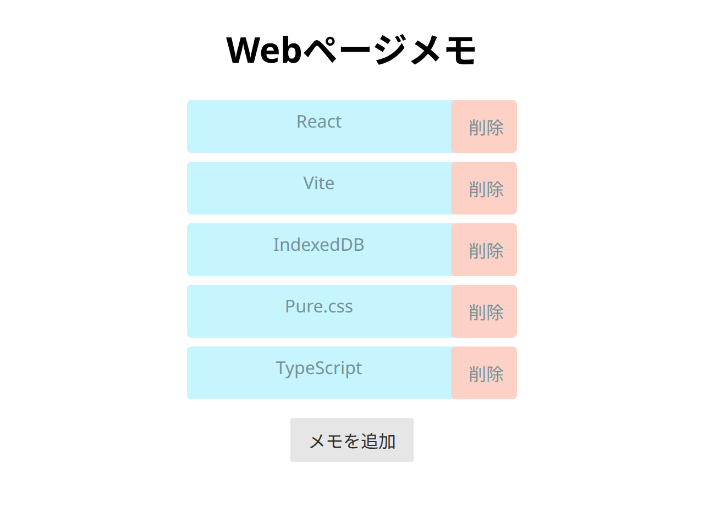
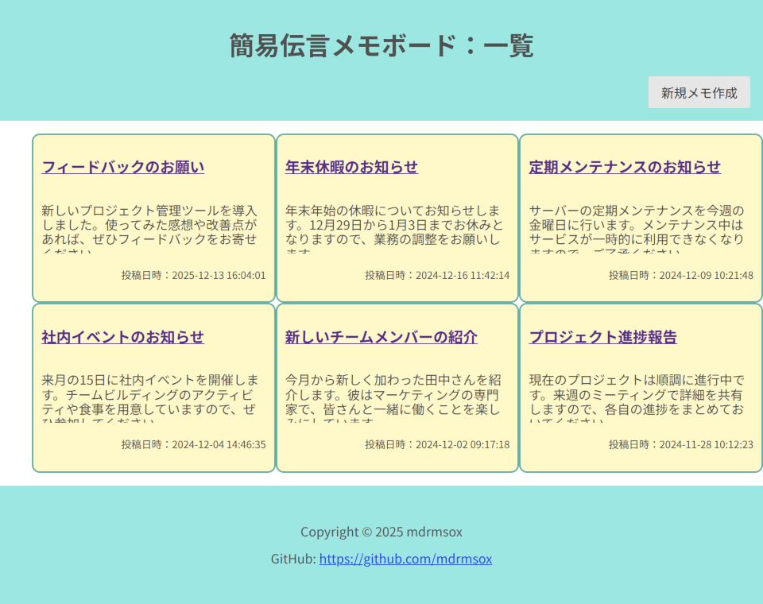

mdrmsox （ハンドルネーム）
長年プログラミングに興味を持ち、独学する中で、Java, Python, JavaScriptなどの言語を学び、アプリケーション開発に興味を持つようになりました。
このページでは、これまでに学習のアウトプットとして開発したアプリケーションをご紹介します。
これらのアプリでは、React、Flaskといったフレームワークを中心に、IndexedDB、SQLiteといったデータベース、そしてOracle Cloud Infrastructure上でUbuntu、Apache2、mod_wsgiといったインフラ技術、さらにBulma、Pure.cssなどのCSSフレームワークを使用しています。
Webページメモアプリ

概要
このアプリは、React、TypeScript、IndexedDBの学習を目的として作成しました。個人的に、Webページのアドレスを保存したいが、ブラウザのブックマークに保存するほどではないという状況がよくあるため、そのような機能を備えたWebアプリとして開発しました。
IndexedDBを利用してデータを保存することでフロントエンドのみで機能を実現し、バックエンドサーバを必要としません。そのため、静的ホスティングサービス上で簡単に公開できます。
使用技術一覧
- React
- IndexedDB
- Pure.css
- TypeScript
- Vite
公開URL
Webページメモアプリを開く
GitHubリポジトリ
web-page-memo
簡易伝言メモボード

概要
このアプリは、Flaskの基本機能（ルーティング・テンプレート・フォーム処理・SQLiteとの連携）の習得と、Oracle Cloud Infrastructure上へのデプロイを通じたクラウドコンピューティングサービスの基礎理解を目的に作成しました。
使用技術一覧
- Python 3
- Flask
- SQLite
- Pure.css
- Oracle Cloud Infrastructure
- Ubuntu
- Apache2
- mod_wsgi
公開URL
簡易伝言メモボードアプリを開く
GitHubリポジトリ
simple_message_board